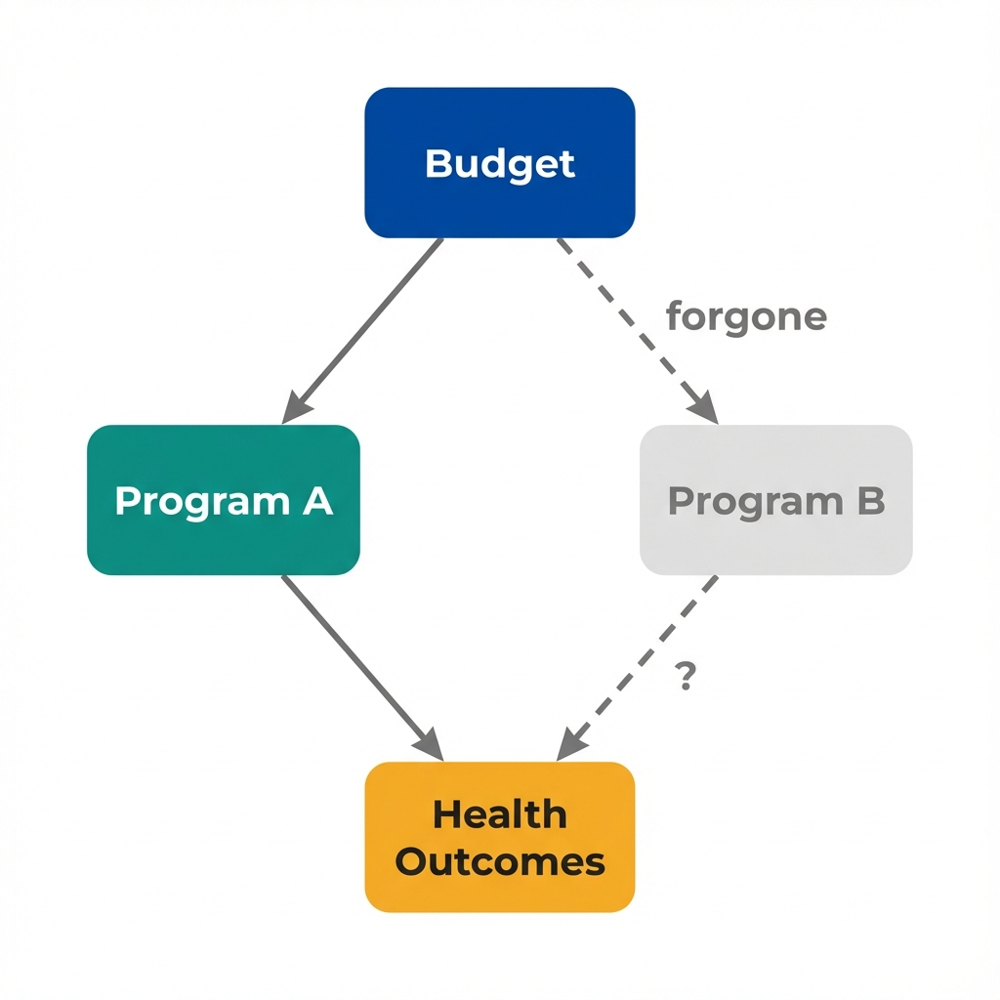

The Data
Two diabetes prevention programs operate in California counties. Both show positive results in their evaluations. A state health department must decide how to allocate its limited budget. (Data are simulated for illustration.)
Program A prevents more cases.
Does that make it the better choice?
Effectiveness
When focusing only on effectiveness, the research question is: which program produces more health gain? By this measure, Program A looks superior.
| Metric | Program A | Program B |
|---|---|---|
| Cost per 100 participants | $50,000 | $25,000 |
| Diabetes cases prevented | 8 | 3 |
| QALYs gained | 20 | 12 |
| Cost per QALY | $2,500 | $2,083 |
| Verdict: "Does it work?" | Yes | Yes |
Program A costs twice as much.
What happens to the health outcomes we could have bought with those extra dollars?
Opportunity Cost
Every dollar spent on Program A is a dollar not spent elsewhere. Economists call this opportunity cost. The true cost of any program includes the benefits we gave up by not choosing the alternative.
What Is Opportunity Cost?
Opportunity cost is the value of the next best alternative you give up when making a choice.
- If you spend $50,000 on Program A, you cannot spend that money on Program B
- The "cost" of Program A includes the health gains you would have gotten from Program B
- A program can be effective yet still represent a poor use of resources

Every spending decision has a counterfactual: what would have happened with that money elsewhere?
Budget Allocation Simulator
Adjust the slider to allocate a fixed $100,000 budget between programs. Watch how total health outcomes change.
Program A
Program B
Total Health Gain
The more efficient program generates more health per dollar.
But how do we frame this comparison for decision-makers?
The Question
Economists reframe the evaluation question. Instead of asking "Does it work?" we ask "Is it worth it, given the alternatives?"
The State Health Department's Decision
With a fixed $100,000 budget for diabetes prevention, the department can fund:
Option 1: All Program A
Option 2: All Program B
Program B generates 20% more health benefit from the same budget.
What about effectiveness?
Program A is more effective per person. But with limited budgets, reaching more people at lower cost can produce greater total benefit.
What about intensity?
Intensive programs work better for individuals. Economists ask whether the marginal benefit justifies the marginal cost.
What about equity?
Program B reaches twice as many people. If those extra participants come from underserved populations, efficiency and equity may align.
What about uncertainty?
Effect estimates have confidence intervals. Cost-effectiveness analysis should incorporate uncertainty about both costs and effects.
Effectiveness analysis tells us what works.
Efficiency analysis tells us what to do about it.
Key Insight
Effectiveness without efficiency is incomplete analysis. Knowing that a program works tells us nothing about whether we should fund it.
Concepts Demonstrated in This Lab
Key Takeaway
Demonstrating that a program improves outcomes is necessary but not sufficient for policy decisions. Every dollar spent on one program is a dollar not spent on another. The relevant comparison is not "does it work?" but "does it work better than the alternatives, per dollar spent?" A program can be effective yet still represent a poor use of limited public health resources. This is what economists mean by efficiency.